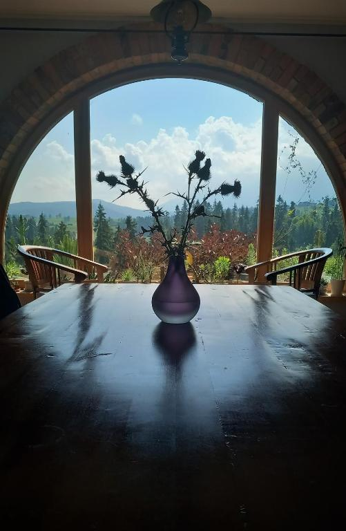
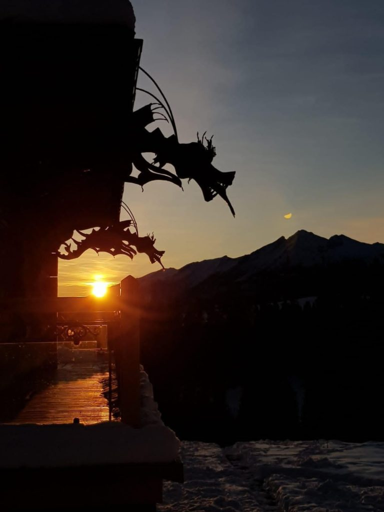
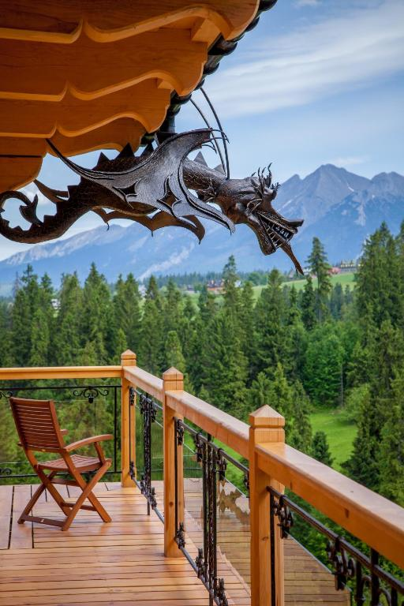

<style>
  :root {
    --color-gold: #c5a059;
    --color-bg-dark: #121212;
    --color-card-bg: #181818;
    --color-text-main: #f3f4f6;
    --color-text-muted: #9ca3af;
  }

  .history-page {
    background-color: var(--color-bg-dark) !important;
    color: var(--color-text-main) !important;
    min-height: 100vh;
    padding-bottom: 60px;
    font-family: 'Inter', system-ui, -apple-system, sans-serif;
  }

  /* Sekcja Hero z obrazem tła */
  .history-hero {
    position: relative;
    background: linear-gradient(rgba(0, 0, 0, 0.65), rgba(18, 18, 18, 0.95)), 
                url('assets/img/histoiria-hero.jpg') center/cover no-repeat;
    padding: 100px 20px 80px 20px;
    text-align: center;
    border-bottom: 1px solid rgba(255, 255, 255, 0.05);
  }

  .history-hero-title {
    font-size: 2.8rem;
    font-weight: 400;
    letter-spacing: 2px;
    color: #ffffff !important;
    margin: 0;
  }

  .history-hero-title::after {
    content: '' !important;
    display: block !important;
    width: 140px !important;
    height: 2px !important;
    background-color: var(--color-gold) !important;
    margin: 18px auto 0 auto !important;
  }

  .history-hero-desc {
    margin: 24px auto 0 auto;
    color: #e5e7eb;
    font-size: 1.25rem;
    font-weight: 300;
    max-width: 750px;
    line-height: 1.7;
    font-style: italic;
  }

  /* Kontener główny dla sekcji */
  .history-container {
    max-width: 1100px;
    margin: 0 auto;
    padding: 60px 20px 20px 20px;
    display: flex;
    flex-direction: column;
    gap: 80px;
  }

  /* Ogólne style nagłówków sekcji */
  .section-header {
    text-align: center;
    margin-bottom: 30px;
  }

  .section-title {
    font-size: 2rem;
    font-weight: 400;
    letter-spacing: 1.5px;
    color: #ffffff !important;
    margin: 0;
    text-align: center !important;
  }

  .section-title::after {
    content: '' !important;
    display: block !important;
    width: 120px !important;
    height: 2px !important;
    background-color: var(--color-gold) !important;
    margin: 14px auto 0 auto !important;
  }

  /* Sekcja 1: Pełna szerokość (Tekst + Zdjęcie poniżej) */
  .full-width-section {
    text-align: center;
    max-width: 850px;
    margin: 0 auto;
  }

  .full-width-text {
    color: var(--color-text-muted);
    font-size: 1.05rem;
    line-height: 1.8;
    font-weight: 300;
    margin-bottom: 30px;
  }

  .quote-highlight {
    color: var(--color-gold);
    font-weight: 400;
    font-size: 1.15rem;
    display: block;
    margin-top: 16px;
  }

  .full-width-img-wrapper {
    width: 100%;
    border-radius: 8px;
    overflow: hidden;
    box-shadow: 0 8px 25px rgba(0, 0, 0, 0.5);
  }

  .full-width-img-wrapper img {
    width: 100%;
    max-height: 500px;
    object-fit: cover;
    display: block;
  }

  /* Układ dwukolumnowy (Zdjęcie / Tekst naprzemiennie) */
  .split-section {
    display: grid;
    grid-template-columns: 1fr 1fr;
    gap: 40px;
    align-items: center;
  }

  .split-section.reverse {
    direction: ltr;
  }

  .split-img-wrapper {
    width: 100%;
    border-radius: 8px;
    overflow: hidden;
    box-shadow: 0 8px 25px rgba(0, 0, 0, 0.5);
    aspect-ratio: 4 / 3;
  }

  .split-img-wrapper img {
    width: 100%;
    height: 100%;
    object-fit: cover;
    display: block;
  }

  .split-content {
    display: flex;
    flex-direction: column;
    justify-content: center;
  }

  .split-text {
    color: var(--color-text-muted);
    font-size: 1.05rem;
    line-height: 1.8;
    font-weight: 300;
  }

  /* Wykaz/Lista z kropkami dla Sekcji "Dom z duszą" */
  .bullet-list {
    list-style: none;
    padding: 0;
    margin: 16px 0;
  }

  .bullet-list li {
    position: relative;
    padding-left: 24px;
    margin-bottom: 8px;
    color: #e5e7eb;
  }

  .bullet-list li::before {
    content: '•';
    color: var(--color-gold);
    font-size: 1.5rem;
    position: absolute;
    left: 0;
    top: -4px;
  }

  /* Przycisk akcji (CTA) */
  .cta-btn {
    display: inline-block;
    margin-top: 24px;
    padding: 14px 32px;
    background-color: transparent;
    color: var(--color-gold) !important;
    border: 1px solid var(--color-gold);
    border-radius: 4px;
    text-decoration: none;
    font-size: 0.95rem;
    letter-spacing: 1.5px;
    text-transform: uppercase;
    transition: all 0.3s ease;
    width: fit-content;
  }

  .cta-btn:hover {
    background-color: var(--color-gold);
    color: #121212 !important;
    box-shadow: 0 4px 15px rgba(197, 160, 89, 0.3);
  }

  /* RWD / Responsywność */
  @media (max-width: 868px) {
    .split-section {
      grid-template-columns: 1fr;
      gap: 24px;
    }

    .split-section.reverse .split-img-wrapper {
      order: -1; /* Obrazek zawsze na górze na telefonach */
    }

    .history-hero-title { font-size: 2rem; }
    .history-hero-desc { font-size: 1.05rem; }
    .section-title { font-size: 1.6rem; }

    .cta-btn {
      margin: 24px auto 0 auto;
    }
  }
</style>

<main class="history-page">

  <!-- Sekcja Hero z Tłem i Tytułem -->
  <section class="history-hero">
    <h1 class="history-hero-title">HISTORIA PENSJONATU</h1>
    <p class="history-hero-desc">
      Pensjonat powstał jako spełnienie marzenia pisarki Marii Nurowskiej, która szukała miejsca do życia i inspiracji pisarskiej.
    </p>
  </section>

  <div class="history-container">

    <!-- SEKACJA 1: Niezwykła Opowieść (Tytuł + Tekst + Obrazek Poniżej) -->
    <section class="full-width-section">
      <div class="section-header">
        <h2 class="section-title">Niezwykła Opowieść</h2>
      </div>
      <div class="full-width-text">
        <p>
          Historia Dom Pod Smokami zaczyna się od niezwykłej opowieści. 
          Gustaw Holoubek opowiedział kiedyś Marii Nurowskiej o pewnej łące na Wysokim Wierchu w Bukowinie Tatrzańskiej – miejscu, które „leczy duszę”. 
          Ta historia głęboko zapadła w pamięć pisarki i powróciła w momencie, gdy szukała swojego miejsca na ziemi.
        </p>
        <span class="quote-highlight">
          Gdy zobaczyła tę polanę, wtedy pojawiła się myśl: „mój dom powinien stanąć właśnie tutaj”.
        </span>
      </div>
      <div class="full-width-img-wrapper">
        <!-- PODMIENIAJ ADRES ZDJĘCIA PONIŻEJ -->
        
      </div>
    </section>

    <!-- SEKCJA 2: Od marzenia do rzeczywistości (Tytuł wyśrodkowany na górze, Zdjęcie LEWO, Tekst PRAWO) -->
    <section>
      <div class="section-header">
        <h2 class="section-title">Od marzenia do rzeczywistości</h2>
      </div>
      <div class="split-section">
        <div class="split-img-wrapper">
          <!-- PODMIENIAJ ADRES ZDJĘCIA PONIŻEJ -->
          
        </div>
        <div class="split-content">
          <div class="split-text">
            <p style="margin-bottom: 12px;">
              Na początku lat 2000 Maria Nurowska podjęła odważną decyzję – opuściła Warszawę i przeniosła się w Tatry. Na bukowiańskim wzgórzu postanowiła zbudować dom, który stanie się jej azylem i przestrzenią twórczą.
            </p>
            <p style="margin-bottom: 12px;">
              Dom powstawał etapami, finansowany z pracy pisarskiej. Już od początku miał być czymś więcej niż prywatną przestrzenią – miejscem spotkań, ciszy i odpoczynku.
            </p>
            <p>
              Z jego okien rozciąga się panorama na jedne z najpiękniejszych szczytów Tatr, a cisza i przestrzeń sprzyjają wyciszeniu i odpoczynkowi.
            </p>
          </div>
        </div>
      </div>
    </section>

    <!-- SEKCJA 3: Skąd nazwa „Pod Smokami”? (Tytuł wyśrodkowany na górze, Tekst LEWO, Zdjęcie PRAWO) -->
    <section>
      <div class="section-header">
        <h2 class="section-title">Skąd nazwa „Pod Smokami”?</h2>
      </div>
      <div class="split-section reverse">
        <div class="split-content">
          <div class="split-text">
            <p style="margin-bottom: 16px; font-weight: 400; color: #ffffff;">
              Nazwa domu nie jest przypadkowa.
            </p>
            <p style="margin-bottom: 16px;">
              Na krawędziach jego dachu znajdują się charakterystyczne rzeźby smoków (rzygacze rynnowe) – symboli mądrości i strażników. Jak mówiła właścicielka, smoki <em>„strzegą jej skarbu, jakim jest ten dom”</em>.
            </p>
            <p>
              To właśnie one nadają miejscu niepowtarzalny charakter i sprawiają, że Dom Pod Smokami jest tak łatwo rozpoznawalny.
            </p>
          </div>
        </div>
        <div class="split-img-wrapper">
          <!-- PODMIENIAJ ADRES ZDJĘCIA PONIŻEJ -->
          
        </div>
      </div>
    </section>

    <!-- SEKCJA 4: Dom z duszą (Tytuł wyśrodkowany na górze, Zdjęcie LEWO, Tekst PRAWO) -->
    <section>
      <div class="section-header">
        <h2 class="section-title">Dom z duszą</h2>
      </div>
      <div class="split-section">
        <div class="split-img-wrapper">
          <!-- PODMIENIAJ ADRES ZDJĘCIA PONIŻEJ -->
          
        </div>
        <div class="split-content">
          <div class="split-text">
            <p style="margin-bottom: 8px;">Dom został zaprojektowany jako połączenie:</p>
            <ul class="bullet-list">
              <li>tradycji góralskiej architektury</li>
              <li>indywidualnej wizji właścicielki</li>
            </ul>
            <p style="margin-top: 16px;">
              Choć inspirowany regionalnym stylem, nie jest typową chatą – to autorska, wyjątkowa interpretacja domu w górach, z charakterystycznym przeszklonym tarasem i widokiem na Tatry.
            </p>
          </div>
        </div>
      </div>
    </section>

    <!-- SEKCJA 5: Więcej niż pensjonat (Tytuł wyśrodkowany na górze, Tekst LEWO, Zdjęcie PRAWO) -->
    <section>
      <div class="section-header">
        <h2 class="section-title">Dom Pod Smokami – Więcej niż pensjonat</h2>
      </div>
      <div class="split-section reverse">
        <div class="split-content">
          <div class="split-text">
            <p style="font-size: 1.2rem; color: #ffffff; font-weight: 300; line-height: 1.6;">
              Przestrzeń odpoczynku, miejsce spotkań, azyl ciszy i równowagi.
            </p>
            <a href="{{ site.baseurl }}/kontakt.html" class="cta-btn">Zadzwoń i rezerwuj</a>
          </div>
        </div>
        <div class="split-img-wrapper">
          <!-- PODMIENIAJ ADRES ZDJĘCIA PONIŻEJ -->
          
        </div>
      </div>
    </section>

  </div>
</main>
